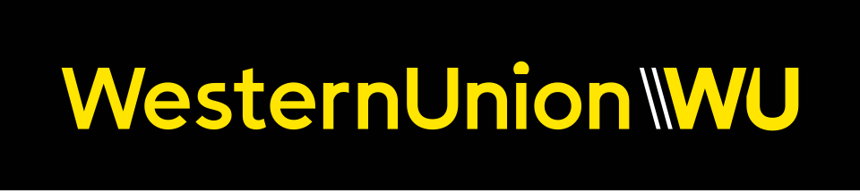

웨스턴 유니온 Western Union
웨스턴 유니온(Western Union)은 미국에 본사를 둔 금융, 통신 회사다. 19세기 전신 회사로 출발해 현재는 전 세계 200여개국에서 개인 송금 등을 대행하는 송금 서비스 기업이다.
최종 업데이트

웨스턴 유니온은 어떤 브랜드인가
웨스턴 유니온은 미국에 본사를 둔 금융, 통신 회사다. 19세기 전신 회사로 설립되어 지금은 전 세계 200여개국에서 개인 송금, 기업 지출과 무역 업무를 대행한다.
전세계 500,000개 대리점을 통해 송금 서비스를 제공하며, 현금 인출을 즉각 할 수 있고 은행 계좌가 없는 고객도 이용할 수 있다는 점 덕분에 개발도상국에서 높은 시장 점유율을 차지한다. 주 수입원인 수수료는 송금 방식, 속도, 이용률에 따라 달라진다.
경쟁사에는 머니그램이 있으며, 페이팔 등 인터넷 기반 송금 서비스와 달리 현금 수령이 가능하다는 점이 비교된다. 1984년 수익 감소와 높은 부채로 워크아웃에 돌입한 뒤 통신 사업을 매각하고 성장률이 높은 송금 서비스에 집중했다.
웨스턴 유니온은 어떻게 시작되고 성장했나
웨스턴 유니온은 1851년 "The New York and Mississippi Valley Printing Telegraph Company"라는 이름으로 설립되었으며, 1856년 "The Western Union Telegraph Company"로 이름을 바꾸었다. 창업자는 Ezra Cornell, Samuel L.
Selden, Hiram Sibley이다. 1884년 다우 존스 산업평균지수가 시작되었을 때 최초의 구성 종목 11개 중 하나였다.
1909년 AT&T가 인수했으나 셔먼 반독점법 위반으로 4년 뒤 매각되었다. 1958년 뉴욕에서 텔렉스 서비스를 시작했고, 1974년에는 미국 기업들 중 처음으로 자체적인 지구 동기 궤도 통신위성을 발사했다.
웨스턴 유니온의 브랜드 아이덴티티는 무엇인가
전신 회사에서 출발해 송금 전문 기업으로 전환했으며, 현금 수령이 가능하고 은행 계좌가 없어도 이용할 수 있어 개발도상국에서 점유율이 높은 송금 브랜드이다.
웨스턴 유니온의 대표 제품과 서비스는 무엇인가
웨스턴 유니온은 지금 어떤 상태인가
1992년 현금 지급 사업을 시작했고, 2006년 전신환 업무를 완전히 종료한 뒤 금융 관련 업무에 주력하고 있다. 본사는 Greenwood Village에 있다.
2017년 연방 통신 위원회는 2004년 1월과 2015년 8월 사이에 55만 건의 고객 항의를 무시했다고 밝혔고, 웨스턴 유니온은 부실한 대응을 인정하고 피해자들과 보상을 합의했다.
웨스턴 유니온 로고는 어떻게 변해왔나
자주 묻는 질문
웨스턴 유니온는 어느 나라 브랜드인가요?
웨스턴 유니온는 미국의 금융 브랜드입니다.
웨스턴 유니온는 언제 설립되었나요?
웨스턴 유니온는 1851년 설립되었습니다.
웨스턴 유니온의 브랜드 아이덴티티는 무엇인가요?
전신 회사에서 출발해 송금 전문 기업으로 전환했으며, 현금 수령이 가능하고 은행 계좌가 없어도 이용할 수 있어 개발도상국에서 점유율이 높은 송금 브랜드이다.
웨스턴 유니온의 대표 제품은 무엇인가요?
웨스턴 유니온의 핵심 사업은 개인 송금이며, 기업 지출과 무역 업무도 대행한다.
웨스턴 유니온는 현재 어떤 상태인가요?
1992년 현금 지급 사업을 시작했고, 2006년 전신환 업무를 완전히 종료한 뒤 금융 관련 업무에 주력하고 있다.
웨스턴 유니온의 창업자는 누구인가요?
웨스턴 유니온의 창업자는 에즈라 코넬, Samuel L. Selden, Hiram Sibley입니다(위키데이터 기준).
웨스턴 유니온의 본사는 어디에 있나요?
웨스턴 유니온의 본사는 Greenwood Village에 있습니다(위키데이터 기준).
출처와 검증
웨스턴 유니온 관련 참고: 공식 웹사이트 · 위키데이터 Q861042 · 한국어 위키백과 · 영어 위키백과. 브랜드명은 한글과 원어를 함께 표기하되 데이터에 없는 표기는 만들지 않습니다. 기원 국가·설립연도는 검수된 정의문에서 확인된 값을 우선하고, 없을 때만 공식 웹사이트 URL이 일치하는 위키데이터 개체의 값을 씁니다. 탄생일의 월·일은 위키데이터, 위키백과 정보상자, 본문 가운데 같은 연월로 확인되는 값만 싣고, 출처끼리 다르면 싣지 않습니다. 위키데이터 값은 2026-11-13 기준입니다.